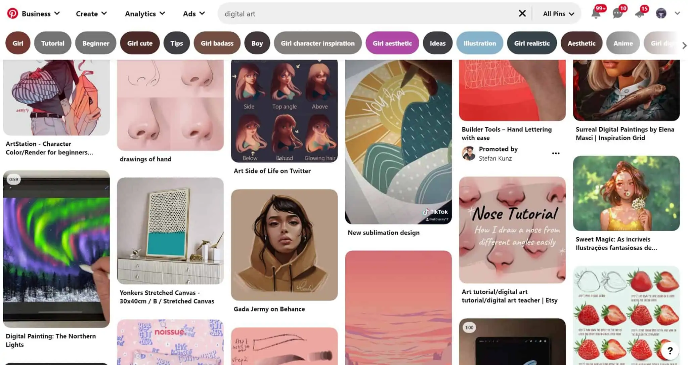

Digital Painting Process
Course Details
Video Host: Sam Does Arts
Video Duration:9 minutes
Want to understand digital artist Sam Yang's method of making art?
Course recommendations to follow along:
- Any 2D digital art software
- Basic knowledge of art principles.
Follow along or try it yourself!
You too can create breathtaking digital art pieces that captivate the viewer. You might think that creating a phenomenal digital art drawing or painting takes hours of tedious work, and you’re not wrong. The most common place that every artist fails is at the beginning of their work. Having a straightforward and dedicated plan on how to execute your vision is the best way to see an art piece through to the end.
Don't worry, you got this!

The first step in the drawing process is to gather inspiration. Reference images are perfect for sparking ideas but also valuable resources to aid in the drawing process. You don’t need to search for a specific image that matches what you want to draw. Instead, try finding pictures of certain elements, such as clothing or poses, and put them together on a board. You can also have reference images handy of textures you want to incorporate in your work. Finally, try having a manikin or 3D model pose as a reference during the drawing process. Not only will this help sharpen the anatomy of your piece, but it can be a helpful tool for when you go to add your primary and secondary light sources. If you do use another artist’s work as a reference, try not to exactly copy details or their design. This is plagiarism and is a serious legal offense. But there’s nothing wrong with gathering inspiration from other artists or trying out new techniques in your own work. If you do use another artist’s pose, brush, or other assets with permission, be sure to include their name with your work. Some artists specifically request this, but more often than not, it’s a simple courtesy you can take. The realism and detail in your drawing will be drastically improved if you have reference images for every element in the scene. It may be easy enough to draw a crate from memory, for example, but you’re bound to remember and include more minuscule details if you have a photo handy. For digital painters, having a photo of your subject is key. But what some painters often forget is to have a photo of your subject from multiple angles. There are certain details that are lost with singular perspectives.
Sketch to success!
Creating a rough sketch is the next part of the digital art process. The keyword here is a rough sketch, not a perfect one. Take time to scribble out your figures and get a feel for how the composition of your piece will play out. Sketching quickly and without much detail will allow you to fine-tune things before you go on to create your outline. This rough sketching method is also a common warm-up for artists, as it allows them to refamiliarize themselves with proper anatomy and dimensions. You may need to create quite a few sketches before you’re satisfied with how your piece will play out. Another thing you can do in this step is to give a rough outline of your background and other inanimate elements. You’ll want to have an idea of everything going on around your subject, so you don’t lose sight of it later on in the piece. Be sure to define what your figure is sitting, standing, or posing near, and block this out. If you don’t, you might end up with some perspective issues later on. If your sketch ends up being a bit messy, there’s no need to worry. You can create a new layer to retrace over your sketch, which we’ll cover later. You can also reduce the opacity of this layer, so it doesn’t show through in your work. As an added option, try sketching on paper and scanning it into your art software. Some artists “think” better on paper or are accustomed to using other tools.
Back to courses {% if user.is_authenticated %} Mark as finished {% endif %}